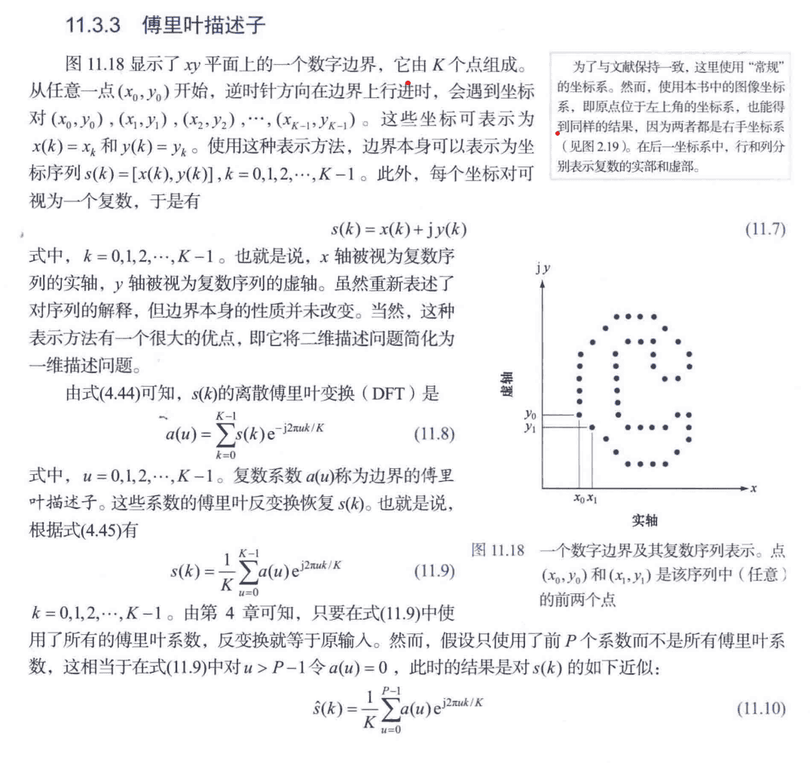
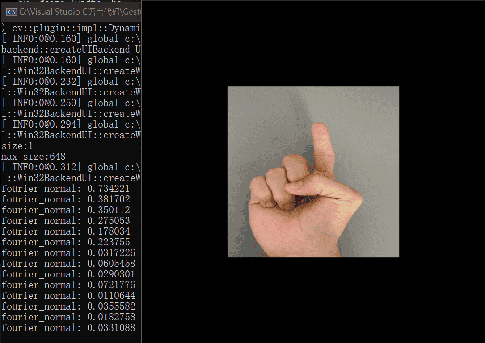

前言
本文采用 Opencv C++ 实现简单的手势识别；主要步骤为获取手部轮廓、提取特征、训练网络、预测结果。
肤色检测
这一步主要是便于后续的手部轮廓提取。这里用到的方法是 基于 YCrCb + OSTU 的方法的，其他方法可参考上一篇文章基于Opencv的人体肤色检测 。
相关代码
1 2 3 4 5 6 7 8 9 10 11 12 13 14 15 16 17 18 19 20 Mat YCrCb_otsu_Detect (Mat& src) Mat ycrcb_img; cvtColor (src, ycrcb_img, COLOR_BGR2YCrCb); vector<Mat> channels; split (ycrcb_img, channels); Mat cr_img = channels[1 ]; threshold (cr_img, cr_img, 0 , 255 , THRESH_BINARY | THRESH_OTSU); Mat ycrcb_otsu_detect; src.copyTo (ycrcb_otsu_detect, cr_img); return cr_img; }
获取手部轮廓和特征
获取手部外轮廓直接采用 findContours()函数即可，特征这里本文采用的是傅里叶描述子。手势识别受平移、旋转、缩放这些因素的影响要很小，因为识别一个手势主要在于它整体的一个轮廓，所以这里采用了归一化的傅里叶描述子，可以使得描述子在旋转和尺度变化下具有不变性。
傅里叶描述子的基本原理
傅里叶描述子（Fourier Descriptors）是一种在计算机视觉和图像处理中用于形状分析的技术，也可以在OpenCV中使用。傅里叶描述子通过将形状的边界曲线表示为频域上的复数信号，然后应用傅里叶变换，将形状的信息转换到频域中。这种技术通常用于对象识别、模式匹配、形状比较等任务。
傅里叶描述子的基本思想是将形状的轮廓信息从空间域（即图像中的像素坐标）转换到频域 ，通过这种方式来对形状进行表示和分析。
总之，傅立叶描述子可以很好地描述轮廓特征，并且只需少量的描述子 （即向量中的数不需要太多）即可大致代表整个轮廓 。其次，对傅立叶描述字进行简单的归一化操作 后，即可使描述子具有平移、旋转、尺度不变性 ，即不受轮廓在图像中的位置、角度及轮廓的缩放等影响，是一个鲁棒性较好的图像特征。
归一化的傅里叶描述子 是一种在计算傅里叶描述子时常用的方法，它可以使得描述子在旋转和尺度变化下具有不变性。
在冈萨雷斯的《数字图象处理》一书有详细的推导过程如下：

相关代码
1 2 3 4 5 6 7 8 9 10 11 12 13 14 15 16 17 18 19 20 21 22 23 24 25 26 27 28 29 30 31 32 33 34 35 36 37 38 39 40 41 42 43 44 45 46 47 48 49 50 51 52 53 54 55 void getGesture (Mat& binary, Mat& Fourier_Out) vector <vector<Point>> contours; findContours (binary, contours, RETR_EXTERNAL, CHAIN_APPROX_NONE); int max_size = 0 ; int contours_num = 0 ; for (int i = 0 ; i < contours.size (); i++) { if (contours[i].size () > max_size) { max_size = contours[i].size (); contours_num = i; } } Mat contour_img = Mat::zeros (binary.size (), CV_8UC1); drawContours (contour_img, contours, contours_num, Scalar::all (255 ), 2 , 8 ); vector<float > fourier; vector<float > fourier_normal; for (int u = 0 ; u < max_size; u++) { float x, y, sum_x = 0 , sum_y = 0 ; for (int j = 0 ; j < max_size; j++) { x = contours[contours_num][j].x; y = contours[contours_num][j].y; sum_x += (float )(x * cos (2 * CV_PI * u * j / max_size) + y * sin (2 * CV_PI * u * j / max_size)); sum_y += (float )(y * cos (2 * CV_PI * u * j / max_size) - x * sin (2 * CV_PI * u * j / max_size)); } fourier.push_back (sqrt ((sum_x * sum_x) + (sum_y * sum_y))); } fourier_normal.push_back (0 ); for (int k = 2 ; k < 16 ; k++) { fourier[k] = fourier[k] / fourier[1 ]; fourier_normal.push_back (fourier[k]); } Fourier_Out = Mat::zeros (1 , fourier_normal.size (), CV_32F); for (int i = 0 ; i < fourier_normal.size (); i++) { Fourier_Out.at <float >(i) = fourier_normal[i]; } }
实验图

可见在经过缩小旋转下，归一化后的傅里叶描述子基本一样。
建立特征库
这一步主要是对一些样本进行特征提取，样本的来源我比较懒所以就直接用手机拍 5 个手势，每个手势 10 个样本，大小为 512 * 512 ，保存格式为 i_j.jpg，表示手势 i 第 j 个图像。当然你也可以写一段代码通过数据增强的方法采集不同的手势，这样可以使得后续训练的网络具有泛化性。
如果你采用别人的数据集的话，那么这个数据集需要很大并且多样化，不然等到后面你用自己的手势去进行识别的话效果一般会很差。
建立特征库只需要执行一次就行，如果你要重新建立特征库则再重新执行。
FileStorage 类的使用可参考：
OpenCV —数据持久化: FileStorage类的数据存取操作与示例_getfirsttoplevelnode_iracer的博客-CSDN博客
【OpenCV 4开发详解】保存和读取XML和YMAL文件 - 知乎 (zhihu.com)
OpenCV: cv::FileStorage Class Reference
相关代码
1 2 3 4 5 6 7 8 9 10 11 12 13 14 15 16 17 18 19 20 21 22 23 24 25 26 27 28 29 30 31 32 33 34 35 36 37 38 void getAnnXml () FileStorage fs ("My_ann_xml.xml" , FileStorage::WRITE) ; if (!fs.isOpened ()) { cout << "Could not open xml file" << endl; } Mat Classes = Mat::zeros (sample_classes * sample_nums, 1 , CV_8UC1); Mat TrainData; Mat sample_read; char Samplepath[100 ]; for (int i = 1 ; i <= sample_classes; i++) { for (int j = 1 ; j <= sample_nums; j++) { sprintf_s (Samplepath, "G:\\opencv-python-image\\MyHandImg\\%d_%d.jpg" , i, j); sample_read = imread (Samplepath); cout << "Samplepath:" << Samplepath << endl; Mat binary = YCrCb_otsu_Detect (sample_read); Mat feature_dst; getGesture (binary, feature_dst); TrainData.push_back (feature_dst); Classes.at <uchar>((i - 1 ) * sample_nums + j - 1 ) = i; } } fs << "TrainData" << TrainData; fs << "Classes" << Classes; fs.release (); cout << "数据和类别写入xml文件完成！" << endl; }
保存完的两个文件内容大致如下：
训练网络
这里采用 Opencv 的 ML 模块里的 ANN 网络对样本特征进行训练。步骤跟正常的神经网络训练差不多。
OpenCV 中的 ML 模块（Machine Learning）提供了各种机器学习算法的实现，包括神经网络。其中，cv2.ANN_MLP（Artificial Neural Network - Multi-Layer Perceptron）是OpenCV中用于实现多层感知器（MLP）神经网络的类。
多层感知器是一种前馈神经网络结构，由输入层、多个隐藏层和输出层组成。cv2.ANN_MLP可以用于分类和回归任务，如图像分类、预测等。以下是使用cv2.ANN_MLP的基本步骤：
创建网络： 使用cv2.ANN_MLP.create()方法创建一个cv2.ANN_MLP对象，并设置网络的参数，如层的数量、神经元的数量、激活函数等。准备训练数据： 将训练数据准备为适当的格式。通常，你需要将特征作为输入，将标签作为输出。训练网络： 使用创建的cv2.ANN_MLP对象的train()方法来对网络进行训练。你需要提供训练数据和相应的标签，以及设置训练的一些参数，如迭代次数、学习率等。预测： 使用训练好的网络进行预测，可以使用predict()方法。将特征作为输入传递给网络，得到预测结果。评估： 对于分类任务，你可以使用一些指标（如准确率、混淆矩阵）来评估模型的性能。
训练网络只需要执行一次就行，如果你要重新训练网络则再重新执行。
相关代码
1 2 3 4 5 6 7 8 9 10 11 12 13 14 15 16 17 18 19 20 21 22 23 24 25 26 27 28 29 30 31 32 33 34 35 36 37 38 39 40 41 42 void AnnTrain (int hidden_layer, int out_layer) Mat TrainData, Classes; FileStorage fs ("My_ann_xml.xml" , FileStorage::READ) ; fs["TrainData" ] >> TrainData; fs["Classes" ] >> Classes; Mat layerSizes (1 , 3 , CV_32SC1) ; layerSizes.at <int >(0 ) = TrainData.cols; layerSizes.at <int >(1 ) = hidden_layer; layerSizes.at <int >(2 ) = out_layer; Ptr<ANN_MLP> ann = ANN_MLP::create (); ann->setLayerSizes (layerSizes); ann->setActivationFunction (ANN_MLP::SIGMOID_SYM, 1.0 , 1.0 ); ann->setTrainMethod (ANN_MLP::BACKPROP, 0.1 , 0.1 ); ann->setTermCriteria (TermCriteria (TermCriteria::MAX_ITER, 5000 , 0.01 )); Mat TrainClasses = Mat::zeros (TrainData.rows, out_layer, CV_32FC1); for (int i = 0 ; i < TrainClasses.rows; i++) { for (int j = 0 ; j < TrainClasses.cols; j++) { if ((j + 1 ) == (int )Classes.at <uchar>(i)) TrainClasses.at <float >(i, j) = 1 ; } } cout << "Start Train！" << endl; cout << "Training..." << endl; ann->train (TrainData, ml::ROW_SAMPLE, TrainClasses); cout << "Train Succeed！" << endl; cout << "Save Train Param！" << endl; ann->save ("My_ann_param" ); cout << "Param Save Succeed！" << endl; }
预测结果
通过ann->predict(gesture_feature, output);得到该手势对应每个手势的可能性，再通过 minMaxLoc()找出占比最大的值，则为对应的手势。
1 2 3 4 5 6 7 8 9 10 11 12 13 14 15 16 17 18 int GestureClassify (Ptr<ANN_MLP> ann, Mat& original_img) int result = -1 ; Mat binary = YCrCb_otsu_Detect (original_img); Mat gesture_feature; getGesture (binary, gesture_feature); Mat output; ann->predict (gesture_feature, output); Point maxLoc; double maxVal = 0 ; minMaxLoc (output, 0 , &maxVal, 0 , &maxLoc); result = maxLoc.x; return (result + 1 ); }
计算训练集准确率
1 2 3 4 5 6 7 8 9 10 11 12 13 14 15 16 17 18 19 20 21 22 23 24 25 26 27 28 29 30 31 32 33 34 35 36 37 void train_test () Mat original_img; char Samplepath[100 ]; Ptr<ANN_MLP> ann = ANN_MLP::load ("My_ann_param" ); int accurate_num = 0 , error_num = 0 ; for (int i = 1 ; i <= sample_classes; i++) { for (int j = 1 ; j <= sample_nums; j++) { sprintf_s (Samplepath, "G:\\opencv-python-image\\MyHandImg\\%d_%d.jpg" , i, j); original_img = imread (Samplepath); int result = GestureClassify (ann, original_img); printf ("%d_%d.jpg的" , i, j); cout << "预测手势是: " << result << endl; imshow ("src" , original_img); char str[20 ]; sprintf_s (str, "Gesture: %d" , result); string text = str; putText (original_img, text, Point (20 , 30 ), FONT_HERSHEY_SIMPLEX, 1 , Scalar (255 , 255 , 0 ), 2 , 8 ); imshow ("result" , original_img); if (i == result){ accurate_num++; } else { error_num++; } waitKey (200 ); } } cout << "准确率: " << double (accurate_num) / double (accurate_num + error_num) << endl; }
主函数代码
这里采用摄像头截取手部识别手势，如果对视频每一帧就不断识别（处理结果时间较长 200ms左右）会导致视频帧率很低，估计就 5 帧左右；因此我这里改为当按下空格键再截取视频帧图像并进行识别显示。
1 2 3 4 5 6 7 8 9 10 11 12 13 14 15 16 17 18 19 20 21 22 23 24 25 26 27 28 29 30 31 32 33 34 35 36 37 38 39 40 41 42 43 44 45 46 47 48 49 50 51 52 53 54 55 56 57 58 59 60 61 62 63 64 65 66 67 68 #include <opencv2/opencv.hpp> #include <iostream> #include <string> using namespace std;using namespace cv;using namespace ml;int sample_classes = 5 ; int sample_nums = 10 ; Mat YCrCb_otsu_Detect (Mat& src) ; void getGesture (Mat& binary, Mat& Fourier_Out) void getAnnXml () void AnnTrain (int hidden_layer, int out_layer) int GestureClassify (Ptr<ANN_MLP> ann, Mat& original_img) void train_test () int main () char Samplepath[100 ]; Ptr<ANN_MLP> ann = ANN_MLP::load ("My_ann_param" ); VideoCapture capture (0 ) ; if (!capture.isOpened ()) { cout << "Video load error" << endl; exit (-1 ); return -1 ; } namedWindow ("frame" , WINDOW_NORMAL); resizeWindow ("frame" , 512 , 512 ); Mat frame; while (capture.read (frame)) { char key = waitKey (100 ); if (key == 27 ) break ; if (key == ' ' ) { clock_t StartTime = clock (); Mat processed_frame; flip (frame, processed_frame, 0 ); int result = GestureClassify (ann, processed_frame); cout << "预测手势是: " << result << endl; char str[20 ]; sprintf_s (str, "Gesture: %d" , result); string text = str; putText (processed_frame, text, Point (20 , 30 ), FONT_HERSHEY_SIMPLEX, 1 , Scalar (255 , 255 , 0 ), 2 , 8 ); imshow ("processed_frame" , processed_frame); cout << "Each Frame Wastes Time: " << clock () - StartTime << endl; } imshow ("frame" , frame); } capture.release (); waitKey (0 ); destroyAllWindows (); return 0 ; }
结果图
每个手势样本只有 10 个，训练集准确率还有 0.96，还是不错的，不过这样的话重新拍照手势进行识别时，对测试图像的拍摄要求就相对高一些，要想使得识别更具有泛化性，还需要更多的训练样本进行训练。
结语
本文使用 Opencv 实现一个简单的手势识别，该项目值得优化的地方还有很多，比如增加训练样本、修改网络参数、对代码进行优化减少识别时间等等。
主要步骤有：获取手部轮廓、计算傅里叶描述子、训练 ANN_MLP 网络、预测结果及识别效果显示。
参考资料
基于OPENCV的手势识别技术_opencv手势识别_Lingyoha的博客-CSDN博客
OpenCV之傅里叶描述子特征构建（Fourier Descriptor）_opencv 傅里叶描述子_wendy_ya的博客-CSDN博客
【OpenCV 4开发详解】保存和读取XML和YMAL文件 - 知乎 (zhihu.com)